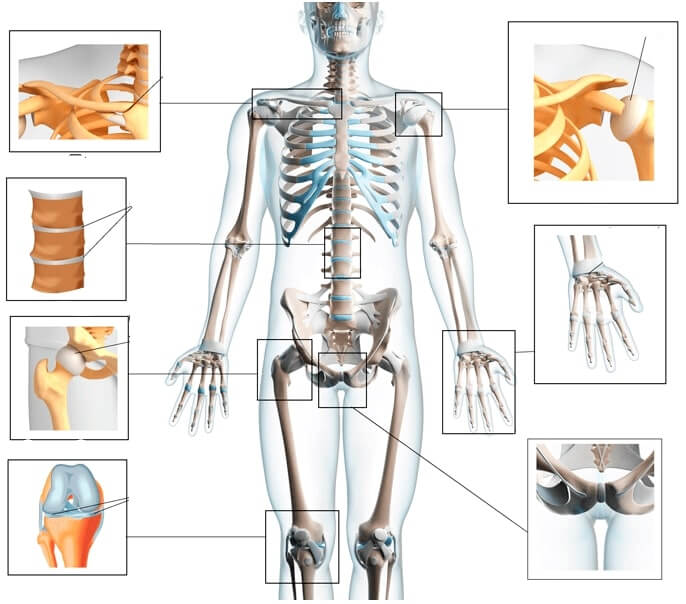
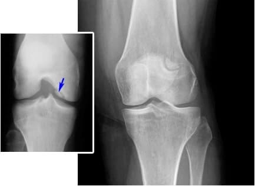
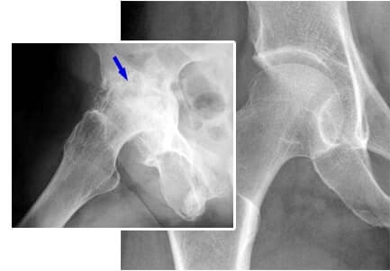
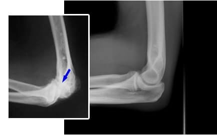

Wilhelm Hartmann
habilitierter
Doktor der Medizin, starb am 12. April 2019 im
100. Lebensjahr. Ab 1959 arbeitete Wilhelm Hartmann als Chirurg in der Orthopädie- und Traumatologie
Abteilung des Forschungsinstituts für Rheumatologie innerhalb von 30 Jahre Er schrieb mehrere Artikel zum
Thema alternative Medizin und widmete sich für viele Jahre der Forschung auf diesem Bereich, um ein
NATÜRLICHES Mittel zu entwickeln, das hinein in die Gelenke und Knorpel Gewebe dringt und von die drinnen
wiederherstellen kann.
Im Jahr 2018 führte ein Forschungsteam unter der Leitung von Professor Hartmann eine Reihe von klinischen
Testierung eines neuen, innovativen Mittels zur Wiederherstellung von Erkrankungen des Bewegungsapparates
durch. Die Ergebnisse haben alle Erwartungen gesprengt. Eine Vergleichung des neuen Produktes mit bekannten
Analoga auf dem pharmakologischen Markt ließ keinen Zweifel - eine neue Ära in der Rheumatologie hat sich vor
Wissenschaftlern geöffnet! Forscher meldeten das Produkt an und waren bereit, mit dessen Massenproduktion zu
beginnen, aber dann kam plotzlich ein Unglück vor - wurde gestorben Professor Hartmann. Was soll damit weiter
passieren, erfährt die Welt von diesem innovativen Produkt? Unsere Korrespondenten stellten diese Frage dem
Haupt Rheumatologen Professor Scheidemann, der ebenfalls einen wesentlichen Beitrag zur Entwicklung dieses
Produktes leistete.
Haupt Rheumatologe Scheidemann nahm seine Stellung zu dieser Situation: "Es fällt uns unendlich schwierig die
Tatsache zu akzeptieren, dass der Professor nicht mehr mit uns ist. Betreffend des Präparaten, konnten wir es
nicht zulassen, dass das Projekt seines ganzen Lebens in Archivunterlagen verloren ging. Aufgrund dessen wurde
es beschlossen, die Arbeiten zu Ende bringen. “
Peter Scheidemann: Guten Tag, Mathias! Wir freuen uns, Ihnen es mitzuteilen , dass nachdem
wir alle notwendigen Prüfungen durchgegangen sind, erhilten wir jedoch eine Fertigungsfreigabe. Das Präparat
wurde "" genannt , deren Zusammensetzung basiert auf naturlichen Komponenten: Ätherische Öle,
Rosskastanien extrakt, Lavendel-Extrakt. Klinische Testierung zeigten eine hohe Wirksamkeit bei
Wiederherstellung der beschädigten Gelenke. Das Produkt ist imstande den Menschen mit rheumatologischen
Erkrankungen über Jahrzehnte das Leben verlängern!
Korrespondent: Herr Scheidemann, erklären Sie uns allen bitte, wie sich von den anderen bereits
bekannten Gelenkschmerzmittel unterscheidet? "
Peter Scheidemann:
Heutzutage im Falle, wenn bei einem Patienten eine
Gelenkerkrankung entdeckt wird, verschreiben Ärzte, als Regel, eines der folgenden Medikamente:
- Sulfasalazin
- Diclofenac
- Dexamethason
- Alflutop
- Movalis
- Mydocalm
- Meloxicam
- Prednisolon
- Hyaluronsäure
- Glucosamin
- Teufelskralle
- Celecoxib
- Opioide
- Azathioprin
- Dolormin
- Celebrex
- Diaflex
- Chondroitin
- Sirdalud
- Paracetamol
- Methotrexat
- Kortison
- Allopurinol
- Alflutop
- Ostenil Plus
- Fermathron Plus
- Biologika
Die meisten davon, wirken nur als eine kurzfristige Schmerz Betäubung aus . Wie es sich herausgestellt hat,
manche Mittel arbeiten ausschließlich dafür um die Symptome zu maskieren, sondern die beeinflussen nicht
selbst die Krankheit Ursachen. Nach all dem oben Gesagten, sollte man nicht vergessen, dass eine längere
Gebrauch solcher Medikamente die Nieren, die Leber und den Magen beschädigt. Der Patient geriet aus diesem
Grund in einen ewigen Kreis: Man ist gezwungen, das Medikament jedes Mal wieder einzunehmen, wenn die Symptome
auftreten, während die Krankheit nicht behandelt wird, sondern die Verdauungsorgane mittlerweile sich
zerstören. Man muss es akzeptiert haben , dass Gelenkerkrankungen äußerst gefährlich sind und schwerwiegende
irreversible Folgen haben. Denken wir mal darüber nach, zu welchen Komplikationen Gelenkerkrankungen führen
können. Zu den meist verbreiteten Gelenkerkrankungen zählen:
| Krankheiten |
Komplikationen im Frühstadium |
Komplikationen im fortgeschrittenen Stadium |
| Arthritis |
Knorpelnekrose, Gelenkzerstörung, Synovitis |
Komplette Gelenkzerstörung, Sepsis, Krebs |
| Arthrose |
Entzündung, Veränderungen der Struktur und Verformung des Gelenks, das Risiko einer Blutvergiftung
|
Behinderung (Gliederlähmung), Knorpelzerstörung, Krebs |
| Osteochondrose |
Bandscheiben Verformung, Nerveneinklemmung |
Bandscheibenvorfall, ZNS Störung, Krebsrisiko |
| Degenerative Gelenkveränderungen |
Gelenk Blutversorgung Störung, Verformung des Knorpelgewebe , Schleimbeutelentzündung |
eingeschränkte Gelenkbeweglichkeit (Behinderung von 1 oder 2 Gruppen), Krebs |
| Osteoporose |
Knochennekrose (Knochen werden zerbrechlicher) |
Knochenzerstörung |
| Gicht |
Fußgelenksentzündung, Salzablagerungen, in den Uratkristallenablagerung in den Knochen. |
Beule Auftreten am Bein, Gelenk Ausdehnung, aseptische Nekrose der Fußknochen, Tumorenauftreten
|
Wie Sie sehen, führen Gelenkerkrankungen häufig zu schwerwiegenden Komplikationen: zu einer Behinderung und
sogar zum Tod eines Patienten bringen. In den letzten Jahren hat die Belastung auf den menschlichen Skelett
erheblich zugenommen. Infolgedessen, fast jeder 25-Jährige hat bereits 1-2 Gelenke beschädigt. Wenn die
Krankheit im Alter von 35 bis 40 Jahren ignoriert wird, dann treten höchstwahrscheinlich Nebenwirkungen
auf.
Jetzt würde Ich vorschlagen, unseres Gesprächs in eine positive Richtung zu ändern. Jahrzehntelang
interessierte sich Professor Hartmann für alternative Heilmethoden und insbesondere für die sibirischen
Geheimnisse der Gesundheit und Langlebigkeit. Alle von ihm gesammelte Wissen sowie die Forschungserfahrung
unseres Forschungsinstituts, sind bei "" Ausarbeitung eingeschlossen.
Natürliche Inhaltsstoffe von Zusammensetzung wirken wie ein Schlüsselfaktor bei der Krankheit
Behebung - die Wiederherstellung der Blutversorgung des besschadigten Gelenks. Dies ist ausreichend dafür um
die Krankheit zu stoppen, Entzündungen zu lindern und mit der weiteren Geweberegeneration Prozesse zu
beginnen. Das scheint leicht aber nur auf den Wörten: In der Praxis kann fast keines der vorhandenen
Medikamente die Durchblutung wiederherstellen. Glücklicherweise existiert heutzutage ein einzigartiges Mittel,
außerdem wird es im Rahmen des staatlichen Programms nahezu kostenlos vertrieben.
Bevor das Produkt in das Programm aufgenommen wurde, wurden umfangreiche klinische Testierungen durchgeführt.
Insgesamt nahmen an den Testierungen ab 10 bis 120 Freiwillige verschiedener Altersgruppen mit verschiedenen
Erkrankungstadium des Bewegungsapparates teil. 93,8% der Freiwilligen stellten die Gelenke Zustände
vollständig wieder her. Bei 5,6% wurden Gesundheit Schwierigkeiten teilweise gelöst, aber im Allgemeinen,
deutlich verbesserte sich der Zustand der Patienten. Diejenigen, die an einer schweren Arthritis Form litten,
konnten nach der Anwendungskur die Beweglichkeit vollständig wiederherstellen. Sie hatten noch leichte
periodische Schmerzen, die sie manchmal immer noch beunruhigen. 0,6% der Gebliebenen zeigten eine signifikante
Verbesserung, aber dies reicht nicht aus, um ihre Gelenke als gesund zu betrachten.
Korrespondent: "Entschuldigung, habe ich richtig verstanden? Ist dieses wunderbare Produkt wirklich
bereits
verfügbar?
Peter Scheidemann:
Ja, das ist wahr. Wir organisierten den Gedenken Stiftung von Professor Hartmann, erhielten
wesentlichen Spenden und starteten ein Rehabilitationsprogramm. Insgesamt wurden mehr als 10 Millionen Euro
aus kommerziellen Mitteln für die Rheumatologie bereitgestellt. Am wichtigsten wäre, dass das Produkt wirklich
wirkt. Ich leitete nämlich persönlich klinische Testierung und kann deren Wirksamkeit bestätigen.

Ich möchte gerne die Ergebnisse der klinischen Testierung vorstellen. Deren
Ergebnisse überraschten viele Ärzte. Dies ist eine echte Rettung für Menschen mit beschädigten
Gelenken.
Bei 99% der Patienten vergingen die Schmerzen innerhalb von 8-10 Minuten
98% der Gefragten, nach dem -Kur, begann das Prozess der Gelenke Wiederherstellung
Bei 93% der Gefragten, wurden nach dem -Kur die Symptome von Arthritis und Arthrose
beseitigt.
Fotos von Gelenken "vor" und "nach" der Anwendung
Frau, 54 Jahre alt. Die Gelenke sind vollkommen gesund. Anwendungsdauer:
1,5 Monate:

Hüftgelenkschmerzen bei einem Mann. 44 Jahre alt. Quälende Schmerzen, die
den Patienten 2
Jahre lang begleitete, vergingen vollständig:

Ellenbogengelenk Schmerzen. Frau, 31 Jahre alt. Anwendungsdauer: 2
Monate: Gelenke sind
vollkommen wiederherstellt

Korrespondent: "Es ist ja beeindruckend! Bitte, sagen Sie , was bedeutet das für Menschen, die sich
bereits
mit der Krankheit weggesteckt sind? "
Peter Scheidemann: Bedeutet es etwa, dass es die Zeit ist, diese Krankheit zu bekämpfen! Vor
uns liegt ein echter medizinischer Durchbruch, mit dem Sie Ihre kranke Gelenke in nur zwei Monaten heilen
können, ohne Ihr Zuhause zu verlassen. kühlt die Haut nicht ab und seine Wirkung zielt nicht auf
eine Schmerzbeteubung - das Mittel „erneuert“ den Körper auf zellulärer Niveau und beseitigt demzufolge so die
Ursache der Krankheit , sondern nicht nur die Symptome. Bandscheiben, Knorpelgewebe und Gelenke kehren
aufgrund der Wiederherstellung der Blutversorgung in ihren ursprünglichen Zustand zurück, das sich aufgrund
eines Traumas oder Alters verschlechtert hat.
Korrespondent: "Wirkt nur gegen bestimmte Krankheiten? "
Peter
Scheidemann: Es stellt die Durchblutung wieder her und wirkt auf zellulärer Niveau,
was bedeutet, dass der Patient vor allen Erkrankungen des Bewegungsapparates geschützt werden kann: Arthritis
und Arthrose, Osteoporose, Rheuma, Gicht, Entzündung, Osteochondrose, Bandscheibenverschiebung.
Bei jeder Krankheitsstadium
Korrespondent: "hilft wirklich dieses Mittel bei all diese Krankheiten, nicht nur Schmerzen
lindert?"
Peter Scheidemann
Das Produkt lindert Schmerzen und stoppt die Krankheit Entwicklung vollständig. Natürlich gibt es heute in der
Medizin andere Lösungen, aber die normalerweise funktionieren ohne gefährliche chirurgische Eingriffe nicht.
Und die sind sehr teuer, deshalb die nur einer kleinen Anzahl von Menschen zur Verfügung
stehen.
Korrespondent: "Habe ich richtig verstanden? Verbreiten Sie wirklich ein außergewöhnliches Mittel? Kann
das
jeder machen? "
Peter Scheidemann:
Existiert nur ein "aber" - aufgrund des geringen Produktionsmenge arbeitet das Programm wahlweise. Aufgrund
dessen, können diejenigen, die das Mittel benötigen, das Formular ausfüllen und einen Rabatt auf
erhalten. Alles, was Sie tun brauchen - Ihren Namen und Telefonnummer einzutragen, damit
Call-Center-Mitarbeiter Sie erreichen könnte und dann per Telefon Ihnen notwendigen Informationen mitzuteilen.
Korrespondent: "Wie lange noch das Programm dauern wird?
Peter Scheidemann
Das Programm ist gültig bis - Heute ist der letzte Tag,
an dem Sie versuchen können, zu erhalten. Falls Sie dies immer noch nicht getan
haben, rate ich Ihnen, sich zu beeilen, da Sie nach dem Programm Beendigung das Mittel mit einem Rabatt von
nicht mehr erhalten können. Ich persönlich garantiere es , dass alle Anfrage berücksichtigt werden und
alle Bedürftigen werden unseres Produkt erhalten.
Herr Scheidemann, vielen Dank für das Interview! Möchten Sie vielleicht unseren Lesern noch etwas sagen,
bevor wir uns verabschieden?
Peter Scheidemann
Ja, vielleicht Ich möchte ihre Leser darauf aufmerksam machen, dass Gelenkerkrankungen allmählich "jünger"
werden. Selbst sogar seltene, leichte Schmerzen können auf ein Gesundheitsproblem hinweisen, das sofort
behoben werden sollte, aber nicht jeder Arzt kann Ihnen helfen. Wie sagt man, die Rettung von Ertrinkenden ist
die Aufgabe der Ertrinkenden selbst. Und erinnern Sie sich daran: Erkrankung des Bewegungsapparates ist nicht
nur Dyskomfort. Krankheiten können die Lebensdauer um 15 bis 20 Jahre senken.